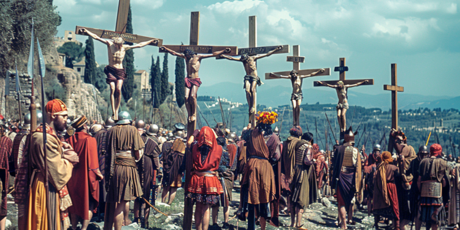

十字架
一，二，三，四，五——不对。一，二，三，四……一，二——
斯巴达克斯数着阿比亚道上的十字架。十字架们无穷无尽，顺着道路似乎延伸到了天堂的彼方。他们纷纷张开双臂，温柔地对钉在自己身体上的、早已冰冷的罪人尸体展开怀抱。罪人们大多闭上了眼睛。他们的血肉同皮肤一起撕裂，勉强允许着他们的肩膀承受着身体的重担下沉至胳膊的水平线之下，形成一团红色的、血肉与肌肤的艺术品。
斯巴达克斯闭上眼，他耳边随即响起那十字架上同僚的哭喊、求饶声。
……七，八，九，十……
那群罗马人究竟花了多久才把这通向地狱的苦痛之路建成？被放上十字架时，那不屈的奴隶们是一言不发，还是拼命求饶，抑或是誓死反抗——反抗罗马的暴政，也反抗斯巴达克斯的懦弱？
斯巴达克斯实在受不了他想象的可怖场景，便睁开了眼睛，然而十字架上的惨象如决堤的河水般又涌入他的眼珠。在他眼前的正是他的同志！这想法将斯巴达克斯折磨得简直要发疯，而在这似是而非的疯狂中他似乎看到了眼前的尸体抬起头，紧紧盯着他的眼睛，如同鹰隼扑向猎物一般，在他恐惧到极点时，忽地大张它那腐烂的口舌，嘹亮而空洞地宣读了他的罪名——
“叛徒！”
斯巴达克斯——这个面对皇帝都未下跪，而穷其一生高昂头颅的男人，忽然膝盖一软而五体投地了。是啊，未上十字架的他又如何能懂得被钉死的痛苦呢？如此这般，望着眼前那尸体的腐烂下坠的下颌，他的内心便也如同被铁钉贯穿。放过我吧，他哀求着，让我翻过那座山，代你们去看沸腾的海洋、寒冰的原野、黄沙的荒原，这样至少一切还有意义。
……十一，十二，十三，十四，十五……
斯巴达克斯的呼吸沉重了。那来自另一个世界的宣判又如钟声般回荡在他耳畔——那么便让我赎罪吧！他说着，如同在战斗中般再次站起，再次抬高了脑袋，从怀中抽出宝剑，对准了那最可恶的敌人——自己的喉咙。如果你不是个懦夫——如果你还算个人，那就在这里结束你的旅途吧，斯巴达克斯对自己说。然而宝剑像是抵上了石墙，无论如何也不肯动弹。
如此这般尝试了多次后，他忽然大笑起来，将宝剑丢向一边——多么滑稽啊！在战场上他结束了多少罗马士兵的生命，又害死了多少追随自己的奴隶；在那些战斗中自己的那双手是多么有力，多么健壮——为何在轮到消灭最后的敌人之时，这双手就变得无缚鸡之力了呢？
那尸体迅速揭露了这问题的答案——叛徒！他忽然感觉双腿无力，瘫坐在地上。
叛徒！他忽然感觉心如火烧，泪流满面。
叛徒！他用手捂住耳朵。不要继续了，他哀求。我是叛徒，我该死，放过我吧，放过我吧——让我度过如虫豸般的一生吧，他哀求。
……二十三，二十四……
刺啦！——一声撕扯终于将斯巴达克斯从他的幻觉中解放出来。原来面前那尸体的下颌终于承受不住自身的重量，脱离了皮肤和筋骨的束缚，自由地坠向大地了。在那下颌接触十字架脚下被血染红的土地前，斯巴达克斯盯着他那失去下颌的判官，终于意识到了自身的命运。
原来如此啊，他想。
……一百零一，一百零二……
尸体的下颌终于撞击大地，发出了震耳欲聋的响声。
……五百六十七，五百六十八……
这样就清楚了，他想。
……五千八百八十九……
他面前的那座十字架悄然无声地消解、融化、倒塌。
……六千。
斯巴达克斯拿起了铲子，开始掘墓。
三小时后，那堵阻隔他宝剑的透明石墙消失了。
-2024.5.23, Rothesay NB, Tony Su
Art Credit: History & Artifacts
Click Me For Document Download as .docx File